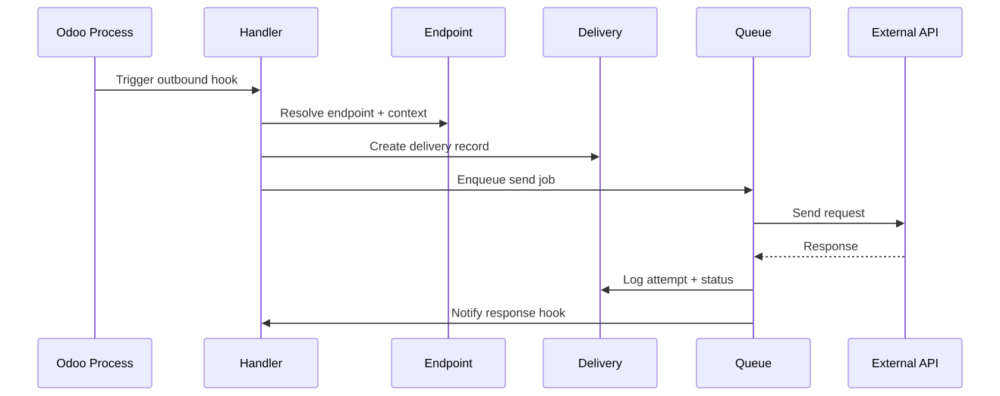
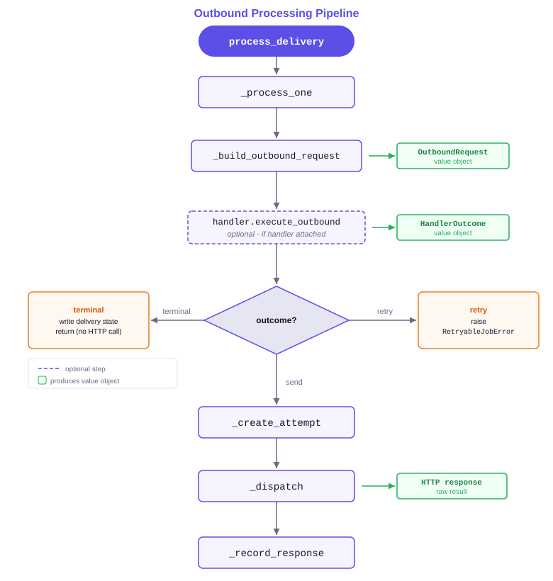

Reliable outbound delivery with templated requests, retries, and diagnostics.


Webhooks > Outbound Endpoints and create an endpoint.Webhooks > Outbound Deliveries.Looking for turnkey integrations? Pair this framework with premium connector addons (e.g., Stripe) to launch faster.
This guide covers the outbound delivery engine: creating and configuring outbound endpoints, triggering deliveries, monitoring attempts, and handling failures.
Install bwt_webhooks_outbound after bwt_webhooks_core and queue_job are in place. At least one handler with Direction = Outbound must exist before creating an endpoint that uses a handler.
Go to Webhooks -> Outbound -> Endpoints -> New.
Required fields:
POST (default), PUT, PATCH, or DELETE.JSON - application/json; default for REST APIs.Form URL Encoded - application/x-www-form-urlencoded.Multipart - multipart/form-data.{token} placeholders resolved from delivery context lines (e.g. /v1/orders/{order_id}).Set Target Hostname to the absolute base URL including the scheme (e.g. https://api.example.com). Leave it blank when a connector addon resolves the hostname dynamically via _get_outbound_api_base_url.
Attach an outbound handler to intercept deliveries before the HTTP request is sent. The handler can mutate the payload, retry, cancel, or dead-letter the delivery before the HTTP call is made.
Use the Headers and Payload tabs to configure rules that build the outgoing request:
{key} syntax.Go to Webhooks -> Outbound -> Deliveries to see all deliveries.
Delivery lifecycle states:
Click a delivery record to open its Attempts tab, which lists every HTTP request made with the response status code, headers, and body.
To retry a delivery in Error or Dead Letter state:
draft state.To permanently close a failed delivery without retrying, use Action -> Dead Letter from the delivery form.
queue_job worker is running and the job channel is not paused or at capacity.{token} placeholder in Target Path.This guide covers the outbound delivery pipeline, handler and rule contract, and extension points for developers building on or customising the outbound delivery addon.
The diagram below shows the call chain executed for every delivery record.

Two value objects keep the data flow explicit:
OutboundRequest - immutable snapshot of the HTTP request to send (method, URL, headers, body mode, payload).HandlerOutcome - interpretation of the handler's return value: send, retry, done, dead_letter, or cancel.States and valid operator-driven transitions:
draft -> queued (via queue action or programmatic call)queued -> processing (worker picks up the job)processing -> done (HTTP success)processing -> error (exception or HTTP error response)processing -> dead_letter (handler dead-letters)processing -> canceled (handler cancels)error / dead_letter / canceled -> draft (operator reset)Rules on bwt.webhook.outbound.handler.rule are evaluated before the HTTP request is dispatched. Supported actions:
send - allow the delivery to proceed (default when no rule matches).done - mark delivery done without sending.dead_letter - dead-letter the delivery without sending.retry - re-enqueue after retry_seconds.mutate - modify the OutboundRequest payload or headers via assignments before sending.Conditions use the same field-path and operator syntax as inbound rules, evaluated against the delivery's resolved context and endpoint configuration.
Context lines (bwt.webhook.outbound.delivery.context_line) are key/value pairs attached to a delivery at queue time. They serve three purposes:
{token} placeholders in the endpoint Target Path._get_outbound_extra_headers hook (see the Connector Integration guide).Attach context lines when queueing a delivery programmatically
endpoint = self.env["bwt.webhook.outbound.endpoint"].search(
[("code", "=", "my-endpoint")]
)
delivery = endpoint.queue_delivery(
payload={"event": "order.paid", "order_id": order.id},
context_lines={"order_id": str(order.id)},
)
The service module services/transport.py translates an OutboundRequest into requests.request kwargs:
build_transport_kwargs(request) - returns a dict ready for requests.request(**kwargs).flatten_form_data(values) - flattens nested dicts for application/x-www-form-urlencoded encoding using key[child] notation.normalize_request_files(files) - coerces file mappings into the tuples that requests expects for multipart/form-data.These helpers can be imported and unit-tested without the ORM.
To add dynamic headers (e.g. per-delivery authentication or versioning):
_get_outbound_extra_headers(delivery) (see the Connector Integration guide) when the extra headers come from a connector backend.bwt.webhook.outbound.delivery and override _collect_extra_headers to contribute additional headers.Headers returned by backend hooks are merged on top of endpoint header rules, so backend-level authentication always takes precedence.
To add a custom pre-dispatch check, extend bwt.webhook.outbound.delivery and override _pre_dispatch_check, returning a result dict to short-circuit or None to allow dispatch.